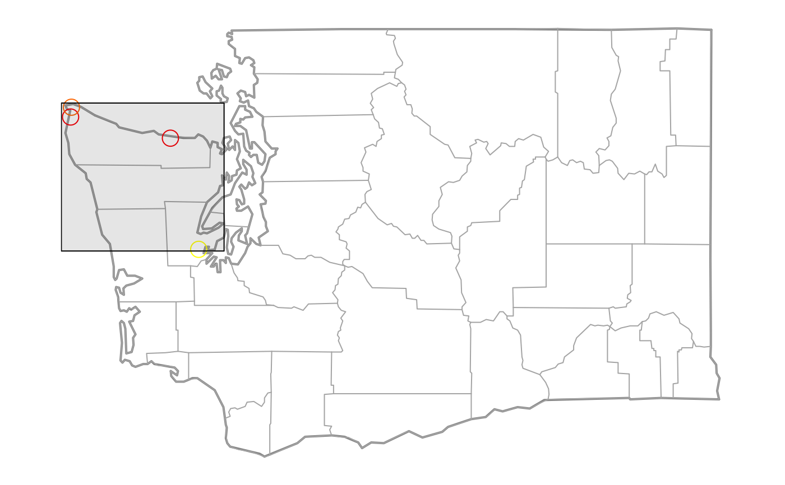

Creates a subset ws_monitor based on one or more optional input parameters.
If any input parameter is not specified, that parameter will not be used to subset ws_monitor.
monitor_subset(ws_monitor, xlim = NULL, ylim = NULL, tlim = NULL, vlim = NULL, monitorIDs = NULL, stateCodes = NULL, countryCodes = NULL, dropMonitors = TRUE, timezone = "UTC")
| ws_monitor | ws_monitor object |
|---|---|
| xlim | optional vector with low and high longitude limits |
| ylim | optional vector with low and high latitude limits |
| tlim | optional vector with start and end times (integer or character representing YYYYMMDD[HH] or |
| vlim | optional vector with low and high data value limits |
| monitorIDs | optional vector of monitor IDs used to filter the data |
| stateCodes | optional vector of state codes used to filter the data |
| countryCodes | optional vector of country codes used to filter the data |
| dropMonitors | flag specifying whether to remove monitors with no data |
| timezone | Olson timezone passed to |
A ws_monitor object with a subset of ws_monitor.
By default, this function will return a ws_monitor object whose data dataframe has the
same number of columns as the incoming dataframe, unless any of the columns consist of all NAs,
in which case such columns will be removed (e.g. if there are no valid data for a specific monitor
after subsetting by tlim or vlim).
If dropMonitors=FALSE, columns that consist of all NAs will be retained.
N_M <- monitor_subset(Northwest_Megafires, tlim=c(20150701,20150731)) xlim <- c(-124.73, -122.80) ylim <- c(47.20, 48.40) Olympic_Peninsula <- monitor_subset(N_M, xlim, ylim) monitor_map(Olympic_Peninsula, cex=2)